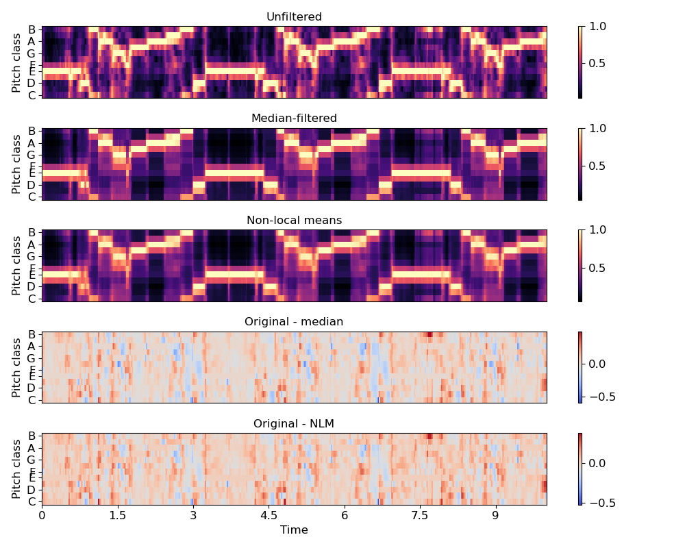

Caution
You're reading an old version of this documentation. If you want up-to-date information, please have a look at 0.9.1.
librosa.decompose.nn_filter¶
- librosa.decompose.nn_filter(S, rec=None, aggregate=None, axis=- 1, **kwargs)[source]¶
Filtering by nearest-neighbors.
Each data point (e.g, spectrogram column) is replaced by aggregating its nearest neighbors in feature space.
This can be useful for de-noising a spectrogram or feature matrix.
The non-local means method [1] can be recovered by providing a weighted recurrence matrix as input and specifying aggregate=np.average.
Similarly, setting aggregate=np.median produces sparse de-noising as in REPET-SIM [2].
- 1
Buades, A., Coll, B., & Morel, J. M. (2005, June). A non-local algorithm for image denoising. In Computer Vision and Pattern Recognition, 2005. CVPR 2005. IEEE Computer Society Conference on (Vol. 2, pp. 60-65). IEEE.
- 2
Rafii, Z., & Pardo, B. (2012, October). “Music/Voice Separation Using the Similarity Matrix.” International Society for Music Information Retrieval Conference, 2012.
- Parameters
- Snp.ndarray
The input data (spectrogram) to filter
- rec(optional) scipy.sparse.spmatrix or np.ndarray
Optionally, a pre-computed nearest-neighbor matrix as provided by
librosa.segment.recurrence_matrix- aggregatefunction
aggregation function (default:
np.mean)If aggregate=np.average, then a weighted average is computed according to the (per-row) weights in rec.
For all other aggregation functions, all neighbors are treated equally.
- axisint
The axis along which to filter (by default, columns)
- kwargs
Additional keyword arguments provided to
librosa.segment.recurrence_matrixif rec is not provided
- Returns
- S_filterednp.ndarray
The filtered data
- Raises
- ParameterError
if rec is provided and its shape is incompatible with S.
Notes
This function caches at level 30.
Examples
De-noise a chromagram by non-local median filtering. By default this would use euclidean distance to select neighbors, but this can be overridden directly by setting the metric parameter.
>>> y, sr = librosa.load(librosa.util.example_audio_file(), ... offset=30, duration=10) >>> chroma = librosa.feature.chroma_cqt(y=y, sr=sr) >>> chroma_med = librosa.decompose.nn_filter(chroma, ... aggregate=np.median, ... metric='cosine')
To use non-local means, provide an affinity matrix and aggregate=np.average.
>>> rec = librosa.segment.recurrence_matrix(chroma, mode='affinity', ... metric='cosine', sparse=True) >>> chroma_nlm = librosa.decompose.nn_filter(chroma, rec=rec, ... aggregate=np.average)
>>> import matplotlib.pyplot as plt >>> plt.figure(figsize=(10, 8)) >>> plt.subplot(5, 1, 1) >>> librosa.display.specshow(chroma, y_axis='chroma') >>> plt.colorbar() >>> plt.title('Unfiltered') >>> plt.subplot(5, 1, 2) >>> librosa.display.specshow(chroma_med, y_axis='chroma') >>> plt.colorbar() >>> plt.title('Median-filtered') >>> plt.subplot(5, 1, 3) >>> librosa.display.specshow(chroma_nlm, y_axis='chroma') >>> plt.colorbar() >>> plt.title('Non-local means') >>> plt.subplot(5, 1, 4) >>> librosa.display.specshow(chroma - chroma_med, ... y_axis='chroma') >>> plt.colorbar() >>> plt.title('Original - median') >>> plt.subplot(5, 1, 5) >>> librosa.display.specshow(chroma - chroma_nlm, ... y_axis='chroma', x_axis='time') >>> plt.colorbar() >>> plt.title('Original - NLM') >>> plt.tight_layout() >>> plt.show()
